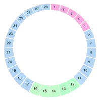
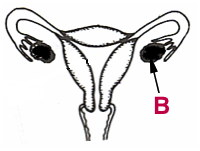
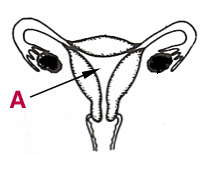
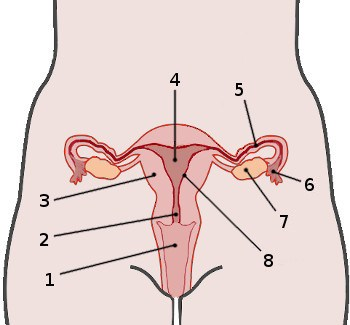
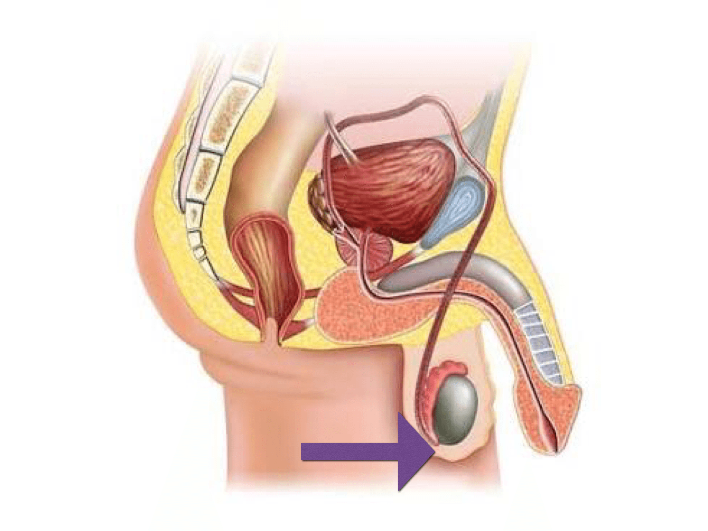
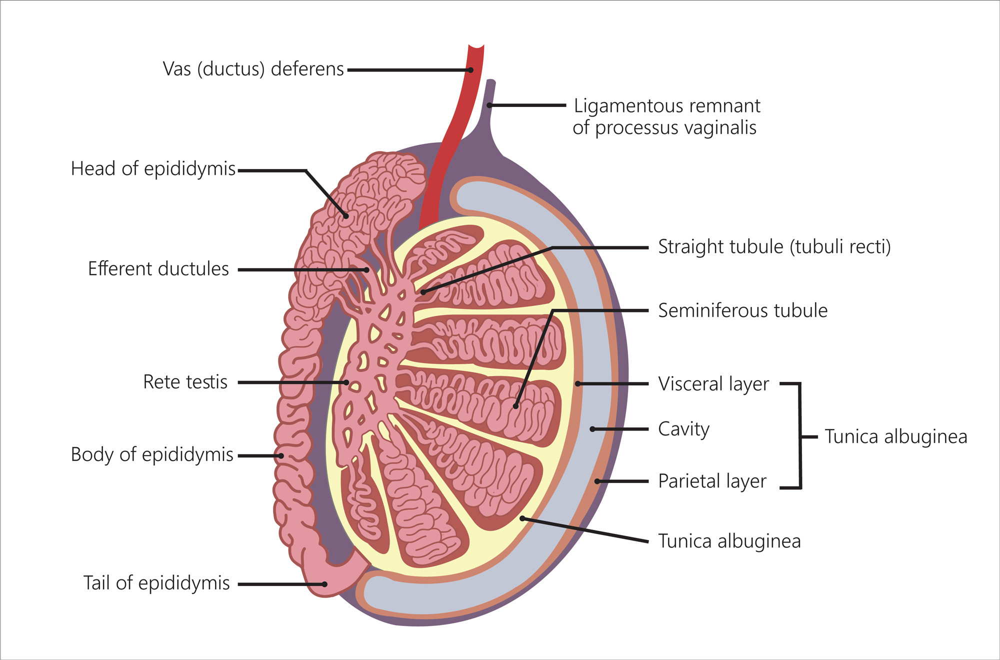

Hello, Ma! Select a quiz from the left to see the answers.
A place for people who are desperate for scores.
Check out the main page here (really cool Ma stuff)
This is Certified Ma Moment™
Last year, there were 2 students who didn't join the Canvas for almost a semester and barely received any scores. So here's your chance.
Answers for Quiz#1 Voltage
Science/Lab
Questions 10
Question 1
The difference in electrical potential energy between two places is called?
Answer:voltage
Think of it like the height difference of a waterfall. This potential gives the water the ability to flow. Voltage is the "electrical height difference."
Question 2
What 'flows' in a wire?
Answer:Electrons
In metal conductors like wires, the electric current is the organized movement of negatively charged electrons.
Question 3
What is voltage?
Answer:What pushes the free electrons around a circuit
If you imagine electrons as water in a pipe, voltage is the "pressure" from a pump that pushes the water along. Without voltage, the electrons would not move.
Question 4
Define the potential difference?
Answer:How much work can potentially be done by a circuit
A higher voltage means that each bit of charge can do more work, like lighting up a brighter bulb or spinning a faster motor.
Question 5
How do aligned batteries affect voltage?
Answer:More volts means more power
Aligning batteries in series (positive to negative) makes their voltages add up. This higher total voltage can deliver more power, as described by the formula P = V²/R.
Question 6
Side by side batteries does what?
Answer:Lengthen the possible usage without increasing voltage.
Placing batteries in parallel (positive to positive) increases the total capacity (Amp-hours). The voltage "push" does not get stronger, but it can last much longer.
Question 7
Where does the term Volt come from?
Answer:Alessandro Volta
The unit "Volt" is named in honor of Alessandro Volta, the Italian physicist who invented the first electrical battery.
Question 8
What is the difference between volts and voltage?
Answer:Voltage is the pressure and Volts are the units to measure that pressure
"Voltage" is the concept, like "length." "Volts" are the units you measure it in, like "meters."
Question 9
What is the socket voltage in Thailand?
Answer:220V
This is the standard residential voltage set by the electrical grid in Thailand and many other parts of the world.
Question 10
What is the voltage of US wall sockets?
Answer:110V
While the modern standard is technically 120V, it is commonly referred to as 110V in the United States.
Answers for CW#1 Current
Science/Lab
Questions 10
Question 1
A closed path through which electrons can flow is ___.
Answer:a circuit
For electricity to flow continuously, it needs a complete, unbroken loop from the power source and back again. This closed path is called a circuit.
Question 2
The flow of electrons through a wire or any conductor is called___.
Answer:current
It is a measurement of how much electric charge is flowing past a point per second.
Question 3
Current is measured in ___.
Answer:amps
The standard unit for measuring electric current is the Ampere, usually shortened to "Amps" (A).
Question 4
Electrons flow from areas of ___ potential energy to areas of ___ potential energy.
Answer:higher, lower
Like a ball rolling downhill, electrons naturally move from a state of high energy (the negative terminal) to a state of low energy (the positive terminal).
Question 5
If the Voltage is increased and the resistance stays the same, Current will?
Answer:increase
According to Ohm's Law (I = V/R), if you increase the "push" (Voltage), the flow (Current) increases.
Question 6
If the Voltage stays the same and Resistance is increased, Current will?
Answer:decrease
According to Ohm's Law (I = V/R), if you increase the "obstacle" (Resistance), the flow (Current) decreases.
Question 7
In a series circuit, which of the following is the same throughout the circuit?
Answer:Current
A series circuit is like a single-lane road. The number of cars passing any point per minute must be the same everywhere. The current is constant.
Question 8
What is current measured in?
Answer:A (Amps)
The unit is the Ampere, and its official symbol in formulas and measurements is "A".
Question 9
What is the unit of power?
Answer:Watts
Electrical power, which is the rate at which energy is used, is measured in Watts (W).
Question 10
Which part of a circuit starts and stops the flow of electrical current?
Answer:switch
A switch works by creating a deliberate break (opening) in the circuit to stop the flow or completing the path (closing) to allow it to flow.
Answers for HW#1 Resistance
Science/Lab
Questions 10
Question 1
If a circuit has two resistors in series both are 4Ω, what is the total resistance of the circuit?
Answer:8Ω
In series, resistances add up. The total opposition is the sum of all individual oppositions. So, 4Ω + 4Ω = 8Ω.
Question 2
If a circuit has two resistors in parallel both are 4Ω, what is the total resistance of the circuit?
Answer:2Ω
In parallel, you provide more paths for the current, so total resistance is always less than the smallest resistor. For two identical resistors, the total is exactly half. So, half of 4Ω is 2Ω.
Question 3
What effect do electrons flowing through a resistor have on the resistor?
Answer:heat it up
The "friction" of electrons pushing through a resistive material converts electrical energy into heat. This is how toasters and electric heaters work.
Question 4
As the length of a wire increases, the resistance of the wire will?
Answer:increase
The longer the path, the more opposition the electrons face. Resistance is directly proportional to length.
Question 5
As the diameter of a wire increases, the resistance of the wire will?
Answer:decrease
A thicker wire is like a wider highway; it allows more current to flow easily. Resistance decreases as the wire's area increases.
Question 6
What is resistance measured in?
Answer:Ω (Ohms)
The standard unit for electrical resistance is the Ohm, represented by the Greek letter Omega (Ω).
Question 7
What is Resistance?
Answer:The ability to reduce the flow of electrons
This is a great functional definition. Resistance is the measure of a material's opposition to the flow of electric current.
Question 8
The mathematical relationship among Voltage, Current, and Resistance?
Answer:Ohm's Law
Ohm's Law (V = I × R) is the fundamental formula that connects these three key concepts in most simple circuits.
Question 9
Voltage divided by Current? (V / I )
Answer:Resistance
This is a direct rearrangement of Ohm's Law. If V = I × R, then R = V / I.
Question 10
The resistance of a wires depends on ___.
Answer:the metal it is made from
The resistance of a wire depends on four things: its material, length, thickness, and temperature.
Ma note:Why isn't the answer "all of above" ??? I don't know.
Answers for HW#2 Watts & Power
Science/Lab
Questions 10
Question 1
What is a watt?
Answer:A unit of power
A watt (W) is the standard unit of power in the International System of Units (SI). It is defined as one joule of energy per second, representing the rate at which energy is transferred or converted.
Question 2
How is power in watts calculated using voltage and current?
Answer:Power (W) = Voltage (V) × Current (A)
This fundamental equation in electrical circuits, often called Watt's Law, states that the power (P) in watts is the product of the voltage (V) in volts and the current (I) in amperes.
Question 3
In which scenario would you be using watts to measure power?
Answer:Calculating the energy needed to power a lightbulb
Power, measured in watts, quantifies the rate at which an electrical device, such as a lightbulb, consumes energy.
Question 4
If a device operates at 10 volts and 2 amperes, what is its power consumption in watts?
Answer:20 watts
Using the formula Power = Voltage × Current: P = 10 V × 2 A = 20W
Question 5
What is the practical application of measuring power in watts for household appliances?
Answer:To understand the energy use of the appliance
The wattage of an appliance indicates its rate of electricity consumption. This information is crucial for estimating how much energy it will use over time, which directly affects electricity costs.
Question 6
If a light bulb uses 60 watts of power and operates for 2 hours, how much energy does it consume?
Answer:120 watt-hours
Energy consumption is calculated by multiplying power by time. Energy = Power × Time. Energy = 60W × 2h = 120Wh
Question 7
How does understanding watts help in reducing electricity bills?
Answer:By choosing appliances that require lower power to use
Since electricity bills are based on total energy consumption (often in kilowatt-hours), selecting appliances with lower wattage ratings for the same task means they use less energy over time, leading to lower bills.
Question 8
If a device operates at 5 volts and 3 amperes, what is its power consumption in watts?
Answer:15 watts
Using the formula Power = Voltage × Current: P = 5V × 3A = 15W
Question 9
What is the significance of a device having a high wattage?
Answer:It uses more energy
A higher wattage rating signifies that a device consumes energy at a faster rate. Over the same period, a high-wattage device will use more total energy than a low-wattage device.
Question 10
If a heater uses 1500 watts of power and operates for 3 hours, how much energy does it consume?
Answer:4500 watt-hours
Energy consumption is the product of power and time. Energy = Power × Time. Energy = 1500W × 3h = 4500Wh
Answers for Quiz#1 Pancreas
Supplemental Science
Questions 5
Question 1
Diabetes Type I
Answer:Insulin is not produced
Question 2
Hormone that causes blood sugar to be lowered?
Answer:Insulin
Question 3
Hormone that causes blood sugar to be raised?
Answer:Glucagon
Question 4
Monosaccharide that is found in blood that cells can use for energy?
Answer:Glucose
Question 5
Gland that secretes hormones that regulate blood glucose?
Answer:Pancreas
Answers for CW#1 Adrenal
Supplemental Science
Questions 5
Question 1
What does the adrenal gland look like?
Answer:Small, triangular gland, divided into regions.
Question 2
Differences between Epinephrine and Norepinephrine?
Answer:Epinephrine leads to greater cardiac output.
Question 3
Which of the following about cortisol is not true?
Answer:secretion is elevated during sleep
Question 4
The medulla releases which of the two hormones when stimulated by the sympathetic nervous system?
Answer:Noradrenaline, Adrenaline
Question 5
Where are the adrenal glands located?
Answer:above the kidneys
Answers for HW#1 Melatonin
Supplemental Science
Questions 10
Quiz results are protected for this quiz and can be viewed a single time immediately after submission.
Correct answers are hidden.
Help me, Ma. Once you finish this, contact me (me@notma.org) and make sure to save questions and answers.
Answers for Quiz#1 Female Reproductive System
Health
Questions 10
Question 1
Which hormone causes the egg to ripen in the ovary?
Answer:FSH
Question 2
Which hormone spikes and consequently causes the release of the egg into the uterus?
Answer:LH
Question 3
What two hormones does the pituitary gland produce?
Answer:FSH & LH
Question 4
What is responsible for creating the hormones estrogen & progesterone?
Answer:The ovaries
Question 5
What hormone(s) is responsible for thickening the lining of the uterus?
Answer:estrogen
Question 6
What is a hormone?
Answer:A Chemical messenger
Question 7
Follicle Stimulating Hormones function is to?
Answer:mature eggs in the ovaries
Question 8
Luteinizing Hormones main role is to?
Answer:release the egg cell
Question 9
The two hormones that maintain the lining of the uterus are?
Answer:Progesterone and estrogen
Question 10
What is the role of FSH (follicle-stimulating hormone)?
Answer:Causes an egg to mature in an ovary. Stimulates the ovaries to release estrogen
Answers for CW#1 Label the Female Reproductive System
Health
Questions 10
Question 1
In the diagram representing the menstrual cycle shown, when does ovulation take place?

Answer:between day 12 and 16
Question 2
The diagram shows the female reproductive system. The part labelled B is called?

Answer:the ovary
Question 3
The diagram shows the female reproductive system. The part labelled A is called?

Answer:the womb
Question 4
The part of the female reproductive system where fertilization takes place?
Answer:Fallopian Tubes
Question 5
Identify part 3

Answer:uterus
Question 6
The small hair-like projection found inside the Fallopian tubes are called what?
Answer:cilia
Question 7
What is the purpose of cilia?
Answer:guide the egg through the Fallopian tube into the uterus
Question 8
What is the function of the uterus?
Answer:Place for a baby to grow
Question 9
Structure 2 is the ___?
Answer:cervix
Question 10
How frequently do ovaries release an egg?
Answer:Once a month.
Answers for HW#1 Male Reproductive System
Health
Questions 10
Question 1
What is the function of the organ shown in the picture?

Answer:used to cool down the temperature in the testes
Question 2
The male reproductive organs that produce sperm and testosterone?
Answer:Testicles
Question 3
The skin covered sac that surround the testes?
Answer:Scrotum
Question 4
Once sperm are made they move into this coiled tube?

Answer:Epididymis
Question 5
About how many sperm are ejaculated under normal circumstances?
Answer:Millions
Question 6
The process of making new sperm is called?
Answer:spermatogenesis
Question 7
Sperm are formed in the ___?
Answer:seminiferous tubules
Question 8
The two male reproductive organs that produce most of the fluids that make up semen are called?
Answer:Seminal Vesicle & Prostate
Question 9
The primary male hormone is ___?
Answer:testosterone
Question 10
The duct that propels live sperm toward ejaculation is the ___?
Answer:vas deferens